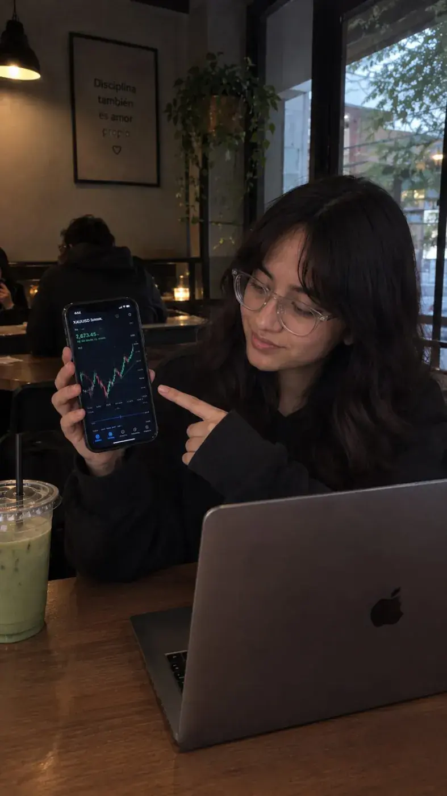
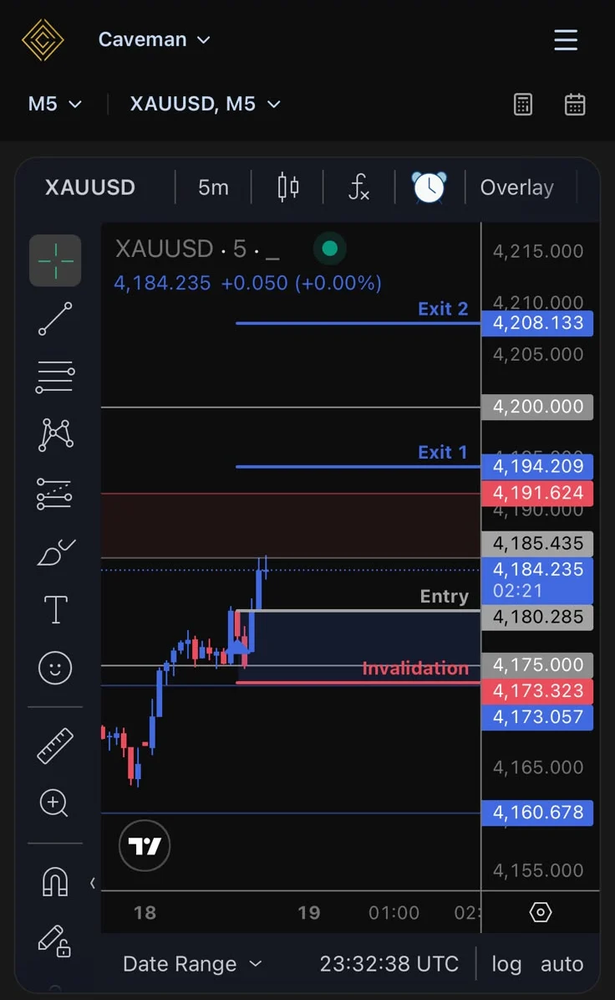
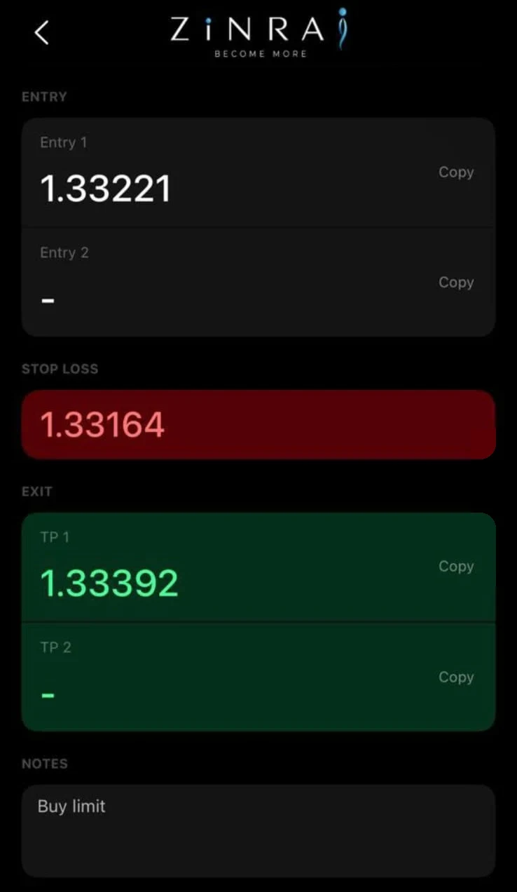

Todo cambia más rápido
Quien aprende un poco cada día se adapta mejor.
Soy Jackelyn Bonilla, emprendedora digital y nómada digital. Aquí comparto, de forma sencilla y honesta, lo que aprendo sobre trading, marketing digital, creación de contenido y habilidades digitales para que tú también puedas empezar desde cero.
Hola, soy Jackelyn, emprendedora digital.
A los 16 años decidí empezar a desarrollar habilidades digitales, aunque al principio no todos creían en esta visión. Durante mis prácticas de bachillerato observé cómo muchas personas vivían pendientes de un horario, con apenas unos minutos o una hora para almorzar, pocos días libres y el estrés de trabajar para recibir un salario. Y pensé: «Stop, yo quiero construir algo diferente para mi vida».
Antes, al salir del colegio, muchas veces simplemente perdía mi tiempo viendo TikToks, sin imaginar todo lo que podía aprender desde mi teléfono o una computadora. Hasta que conocí a personas increíbles, de diferentes edades, que estaban construyendo sus proyectos y trabajando de manera digital.
Entonces me hice una pregunta: ¿Por qué ellos sí y yo no?
Decidí dejar de ser solo espectadora y comenzar a construir mi propio camino a través del marketing digital y el trading. Hoy sigo aprendiendo, creciendo y trabajando por una visión: tener más libertad sobre mi tiempo y crear oportunidades para mi futuro.
Mi fe en Dios es parte de este camino: confío en Él, tomo decisiones con calma y trabajo con gratitud y disciplina. La fe no garantiza resultados, pero me da paz, dirección y esperanza.
Porque a veces, todo comienza cuando te atreves a pensar diferente y decides darte una oportunidad.
Tu visión importa aunque al principio no todos crean en ella. Empieza con un paso pequeño y sigue aprendiendo.
Construir, poco a poco, más libertad sobre tu tiempo y tus decisiones, con habilidades que te acompañan toda la vida.
Dejar de ser solo espectadora y decidir construir tu propio camino, un día a la vez.
Creo en Dios y le entrego mis planes: me da paz y dirección mientras trabajo con disciplina y gratitud. La fe no garantiza resultados, pero me sostiene.
Darte una oportunidad de pensar diferente: aprender, practicar y atreverte a empezar.
Pequeños pasos repetidos con propósito. La constancia hace el resto.
Solo necesitas de 2 a 3 horas para aprender habilidades digitales.
Estas son las habilidades que puedes empezar a desarrollar hoy, paso a paso y a tu ritmo.
Cada año aparecen herramientas y oportunidades nuevas. No se trata de saberlo todo, sino de aprender de forma constante.
Quien aprende un poco cada día se adapta mejor.
Ayuda a investigar, organizar y crear, con tu criterio.
Con internet, estudiar y emprender ya no depende de una oficina.
Lo que aprendes es tuyo y abre más caminos.
Mucho de lo «de toda la vida» ya se movió a lo digital.
Tres pasos simples que se repiten: cada avance te lleva al siguiente.
Estudia una sola habilidad en bloques de 2 a 3 horas.
Aplica, anota qué funcionó y ajusta una cosa.
Sigue cada día, aunque sea poco. Lo pequeño se acumula.
Elige un área y empieza por una sola habilidad.
Entender el mercado con práctica en demo y cuidando el riesgo.
Dar a conocer una marca, un negocio o un producto.
Organizarte y sostener lo que aprendes.
Usar la tecnología con tu propio criterio.
Elige una habilidad y dedica tus primeros bloques de 2 a 3 horas a entender lo básico.
Aplica lo aprendido en ejemplos pequeños: una publicación, un ejercicio, una práctica en demo.
Revisa qué hiciste, qué funcionó y qué mejorarías. Ajusta una sola cosa.
Mantén tu ritmo, comparte tus dudas en la comunidad y escoge tu siguiente habilidad.
Ocho módulos con ejemplos visuales e interactivos para entender cómo funcionan los mercados antes de arriesgar un solo dólar.

Contenido solo educativo. Operar en los mercados conlleva un alto riesgo y puedes perder parte o todo tu capital. No existen ganancias garantizadas y nada de lo que ves aquí es asesoría financiera. Todos los números y gráficos de esta sección son ejemplos simulados.
Trading es comprar y vender activos (divisas, oro, acciones…) buscando beneficiarse de los cambios de precio. Es una actividad de riesgo que requiere estudio, práctica y control emocional. Toca cada tarjeta para girarla:
Son los lugares (casi siempre digitales) donde compradores y vendedores intercambian activos. Cada uno tiene su ritmo y sus riesgos:
En EUR/USD = 1,0850, el euro es la moneda base y el dólar la cotizada: 1 euro vale 1,0850 dólares. Comprar el par es apostar a que el euro se fortalece frente al dólar; venderlo, a que se debilita. (Cifra de ejemplo.)
Es el mapa del trader: muestra cómo se movió el precio a lo largo del tiempo. El eje horizontal es el tiempo y el vertical el precio. Cambia el tipo de gráfico y la temporalidad (datos simulados):
Cada vela representa un periodo: M15 = 15 minutos, H1 = 1 hora, D1 = 1 día. Una buena práctica es mirar primero la temporalidad grande para ver la tendencia y luego bajar a una pequeña.
Cada vela resume un periodo: dónde abrió el precio, hasta dónde subió, hasta dónde bajó y dónde cerró. Construye la tuya moviendo los controles:
El precio avanza y retrocede formando “olas”. Elige un escenario y activa las zonas:
Es lo que separa a quien dura de quien desaparece rápido: decidir cuánto estás dispuesta a perder antes de saber si ganarás. Calculadora educativa (dinero ficticio):
*Sin contar costos. Es un ejemplo matemático, no una predicción: nada garantiza que ganes ninguna operación.
Puedes saber mucho de gráficos y aun así perder por decisiones emocionales. Toca cada emoción para ver cómo aparece y qué hacer:
La disciplina se construye con rutina y un plan por escrito. Marca tu lista de verificación antes de cualquier práctica simulada:
Marca los puntos que se cumplan.
Bienvenida al portal. Uso 6 scanners con inteligencia artificial que me facilitan el trabajo: ayudan a revisar Forex, criptomonedas y copytrading más rápido. La decisión, el plan y el riesgo siguen siendo míos. Aquí te muestro cómo se ven, con ejemplos simulados.
Contenido educativo. La IA no predice el mercado ni garantiza ganancias. Operar implica riesgo de perder parte o todo tu capital. El gráfico de abajo es un ejemplo simulado, no una señal.
Cada scanner revisa el mercado por mí y marca zonas de interés. Los uso en tres áreas:
Pares de divisas, como EUR/USD o el oro, revisados en distintos tiempos.
Gráficos de cripto con zonas de entrada, salida y riesgo marcadas.
Seguir las operaciones de otros traders, entendiendo antes el riesgo.
Los scanners te envían avisos durante el día cuando detectan una zona de interés. Así no tienes que estar pegada a la pantalla y puedes revisar las oportunidades a tiempo. Tú decides si tomarlas, siempre cuidando tu riesgo.


Capturas reales de herramientas que uso, solo para mostrar cómo funcionan. No son recomendaciones de operar ni garantizan resultados.
Este es solo un scanner, uno de los 6.
Así se organiza la información: dónde entrar, dónde cortar la pérdida y dónde tomar ganancia. Las cifras son inventadas para enseñar.
Copiar a otro trader no elimina el riesgo: los resultados pasados no garantizan los futuros. Empieza entendiendo y practicando en demo.
Resume tendencias, zonas y velas en segundos, para que no te pierdas en el detalle.
Muestra caminos posibles y qué tendría que pasar para que cada uno se cumpla.
Ayuda a calcular tamaño de posición, pérdida máxima y relación riesgo / beneficio.
Encuentra patrones en tus propias prácticas para que aprendas de lo que repites.
Empieza con una base sólida: entiende cómo funcionan los mercados, aprende a leer gráficos y velas japonesas, cuida tu riesgo y entrena tu mente. Un paso a la vez, con calma y desde cero.
Contenido educativo. Operar en los mercados implica riesgo de pérdida y no existen ganancias garantizadas. Esta sección no promete resultados.
Aprende a dar a conocer una marca personal, un negocio o un producto —físico o digital— con contenido, una oferta clara y llamadas a la acción que funcionan.
3 hábitos para estudiar con constancia
Guárdalo para tu próxima sesión ↓✨ DescubreToca una opción para explorar
Elige un pilar, un formato y una idea para cada día. Se guarda en tu navegador.
Combina formato, pilar y gancho para desbloquear tu creatividad.
El análisis técnico se aprende. La constancia y la calma se entrenan. Aquí practicas las dos cosas con herramientas visuales basadas en las ideas de dos lecturas que me inspiran.
✨ DescubreToca una opción para explorar
Mejorar un 1 % cada día parece nada… pero se acumula. Mueve el control y mira cómo se separan las dos curvas.
💡 Los hábitos de ejemplo se pueden borrar o cambiar. Se guardan solo en tu navegador. Regla útil: nunca falles dos veces seguidas.
Con la misma ventaja y las mismas reglas, ocho versiones de “tú” operan la misma serie de operaciones. ¿Terminan igual? Ajusta los valores y simula (resultados medidos en unidades de riesgo “R”, dinero ficticio).
Contenido educativo basado en ideas generales sobre probabilidades. No es asesoría financiera; operar implica riesgo y no existen ganancias garantizadas.
Una lista editable inspirada en un día de estudio y creación. Se reinicia cada día y se guarda solo en tu navegador.
Capturas compartidas en mi comunidad y avances de aprendizaje. Cada imagen indica claramente si es un resultado real o un avance de aprendizaje. Toca una imagen para verla en grande.
Resultados individuales compartidos en mi comunidad. Operar implica riesgo.
Analizamos el mercado juntas y juntos apoyándonos en herramientas de IA.
Aprendemos cómo funciona el copy trading, con sus ventajas y sus riesgos.
Sesiones en vivo donde practicamos y resolvemos dudas en tiempo real.
Coordinamos recursos, guías y actividades para que avances con acompañamiento.
Contenido educativo. El trading y el copy trading implican riesgo de pérdida y no existen ganancias garantizadas.
Arrastra tus imágenes aquí o
⚠ Las imágenes subidas aquí se guardan solo en este navegador. Para que todas las personas las vean, copia los archivos a assets/gallery/ y añádelos en js/config.js (ver GUIA-DE-EDICION.md).
Guías completas para leer aquí mismo, página por página, o descargar gratis. Toca un libro para ver su ficha.
assets/pdf/ y actívalo en js/config.js. Las guías de Hábitos atómicos y Trading en la zona son resúmenes de estudio independientes: recomendamos leer los libros originales.Elige el tema y escríbeme por WhatsApp, únete a la comunidad o sígueme en mis redes.
Escríbeme directo o elige el tema:
Escríbeme directo 📈 Trading 🚀 Marketing digital 🛠️ Habilidades digitales 💜 Comunidad gratuita¡Hola! Soy JACK, el asistente de la página.
JACK muestra mensajes programados; no es un chatbot de IA.✏️ Para la dueña del sitio: